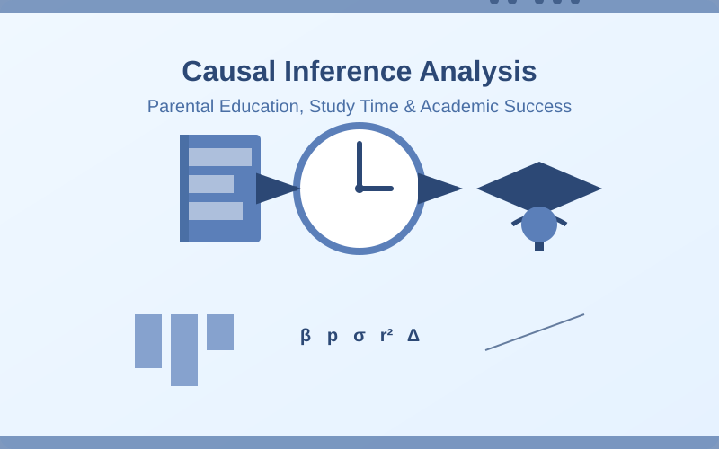
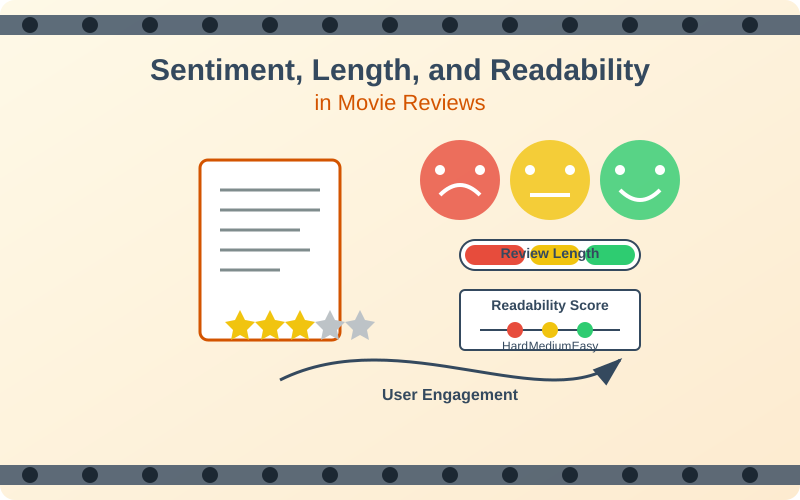
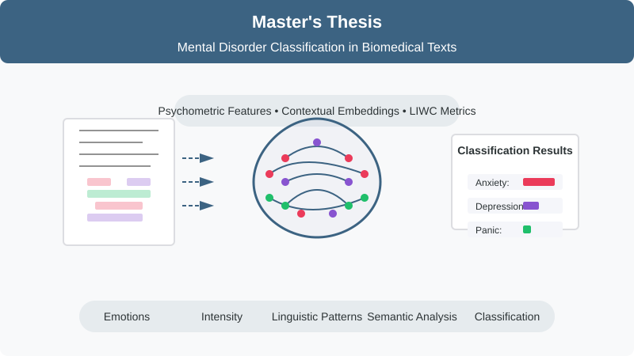
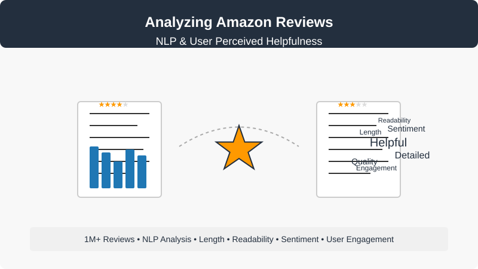
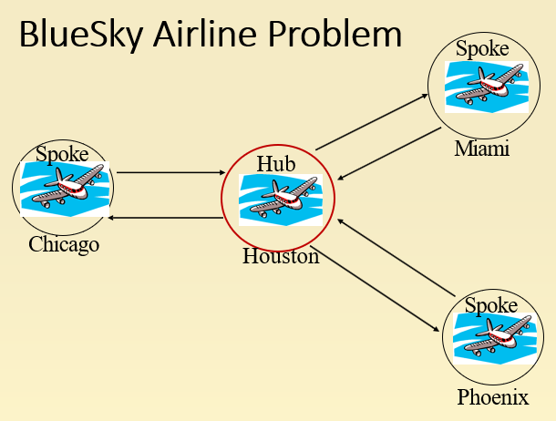

Programming Languages
Python
R
SQL
C / C++
Java
MATLAB
I am currently a Master's student in Data Analytics and Computational Social Science (DACSS) at the University of Massachusetts
Amherst. I am intrigued by Data Science and the concept of finding meaningful insights and underlying patterns from data and
building predictive models. I am also into Competitive Programming as I love coding, developing logic to solve problems, and
using Data Structures and Algorithms to make time and space-efficient programs. I have previously worked with various Machine
Learning and Natural Language Processing (NLP) projects, and I continue to explore and learn various tools and skills.
I am currently integrating LangChain to develop LLM-based applications, including conversational agents, retrieval-augmented
generation (RAG) pipelines, and automated reasoning systems.
Other things I enjoy: Watching movies and TV shows, traveling, playing chess, reading books, and playing guitar


An inferential analysis on how a student's academic (study-time) and demographic (father's and mother's education level) factors (individually) affect their school performance.

This study analyzes how textual metrics such as Sentiment Polarity, Review Length, and Readability Score affect user engagement in Amazon Movie Reviews.

The study involves extracting psychological and psychometric features such as emotions, intensity, LIWC metrics, and contextual embeddings from short biomedical texts, and analyzing their potential to detect an early presence of either anxiety, panic, and depression in them.

This study leverages Natural Language Processing (NLP) techniques to analyze 1M+ Amazon reviews for review length, breadth, readability, writing style, sentiment balance, and other engagement metrics to comprehend their effects on user's engagemnt and perceived helpfulness.

Worked with 16 real-life optimization problems; constructed their mathematical models, and found their optimal solution using CBC and CPLEX solver by employing AMPL software and the PuLP library of Python.